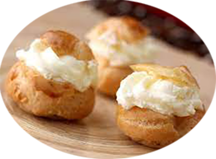
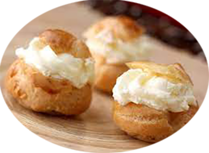

pâte à choux
Pour 6 personnes Ingrédients
RecetteCuisson de la pâte à choux |
| Les brioches | Pour l'apéro | Verrine | Les pâtisseries | Les mousses | Les glaces | Pour le café | Le 4 heures | Les inclassables | Truc & astuce |
pâte à choux
Pour 6 personnes Ingrédients
RecetteCuisson de la pâte à choux |